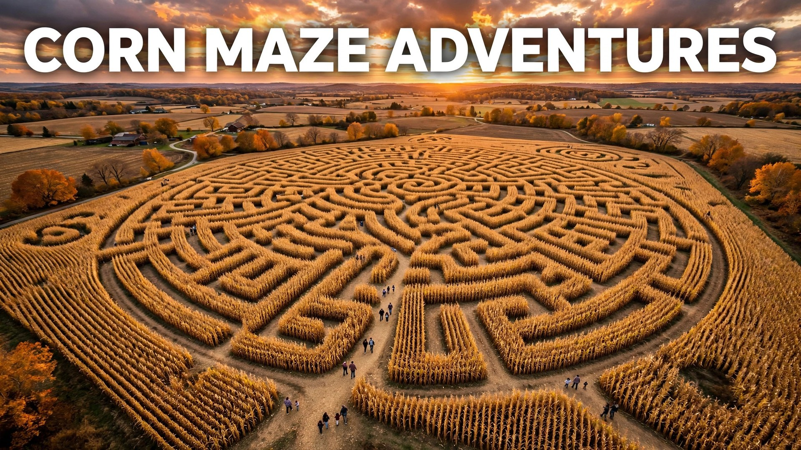

There is a special kind of thrill in standing at the entrance of a corn maze: walls of green and gold towering over your head, the path splitting left and right, and no idea which way leads to the exit. Corn mazes have grown from simple farm attractions into full fall adventures — some sprawling over ten acres with scavenger hunts, trivia checkpoints, and haunted night sessions. Whether you are bringing toddlers for a sunny afternoon wander or testing your nerves in a haunted maze after dark, 2026 is a great year to get lost on purpose.
This guide walks you through everything you need to know before you go: what to expect inside a corn maze, safety tips for families, what to bring (and what to leave in the car), and how to turn one visit into an annual fall tradition. Most mazes open in mid-September and run through the first weekend of November, with peak season in October.
Why Corn Mazes Are a Fall Must-Do
Corn mazes hit the sweet spot between active and relaxing. You get real exercise walking the paths — a big maze can mean two or three miles — while the pace stays entirely yours. Kids love the sense of adventure and the small victories of finding each checkpoint, and adults appreciate an outing that does not involve a screen. Modern mazes are also surprisingly creative: many farms cut elaborate designs into the field, from giant pumpkins and haunted houses to pop-culture shapes best seen from a drone. Entry usually costs between five and fifteen dollars per person, making it one of the best-value fall activities for families and groups.
What to Expect at a Corn Maze
Every maze is different, but the basics are consistent. You will pay at a farm stand or ticket booth, receive a map or a punch card, and enter through a marked gate. Family mazes are typically one to three acres with wide paths, dead ends, and a handful of checkpoints; expect thirty to sixty minutes. Large adventure mazes run five to ten acres with multiple phases, trivia stations, and emergency exits, taking one to three hours. Haunted mazes operate on select October nights with actors, fog, and strobe effects — a completely different experience with age recommendations, usually 12 and up. Ground is uneven dirt, paths can be muddy, and corn leaves are surprisingly sharp, so long sleeves are smart even on warm days.
Safety Tips for Corn Maze Visits
Corn mazes are very safe when you follow basic farm sense, but the tall walls and isolation deserve respect:
- Stay on the paths: cutting through the corn damages the maze and can leave you genuinely disoriented.
- Keep your group together: agree on a meeting point at the entrance, and give kids a buddy.
- Carry a charged phone: for the map, flashlight, and the farm's emergency number posted at the entrance.
- Watch the weather: mazes close in lightning and high wind; tall corn and storms do not mix.
- Hydrate and rest: big mazes are a real hike. Bring water and take breaks at checkpoint benches.
- Know the exits: look for the emergency exit signs on your way in — every legitimate maze has them.
- Skip the haunted maze with young kids: actors and strobe effects can genuinely frighten small children; check the age guidance.
What to Bring (and What to Leave Behind)
Pack light but smart. Essentials include comfortable closed-toe shoes with grip (fields are uneven and sometimes muddy), a charged phone, water, and a light jacket for evening visits when temperatures drop fast among the stalks. A small backpack beats a purse or tote for keeping hands free. Bring cash or check ahead — some farm stands are cash-only. Leave behind anything you cannot afford to lose in the dirt, bulky strollers (use a carrier for babies instead), and pets, which are not allowed in working crop fields. If you are visiting at night, bring a flashlight or headlamp even if the maze provides glow sticks — your own light is brighter and steadier.
Haunted vs. Family-Friendly Mazes
Choosing the right session matters more than choosing the right maze. Daytime family sessions are relaxed: sunshine, kids laughing, checkpoints with punch cards, and no surprises. Flashlight nights add atmosphere without actors — great for tweens who want spooky but not scary. Full haunted nights transform the same field with costumed actors, fog machines, and sound effects; these are intense, genuinely frightening, and usually restricted to older teens and adults. Many farms run all three formats across October, so one maze can serve your family outing, your date night, and your friends' scare night. Read reviews for the specific night you are considering, since scare intensity varies wildly between farms.
Making It a Family Tradition
The best fall traditions are simple enough to repeat every year. Pick one weekend in October and make the corn maze your anchor outing: same farm, same month, new maze design each year since farms re-cut their fields annually. Add small rituals — a stop for cider donuts on the way home, a family photo at the entrance sign, a running tally of who navigates out fastest. Let kids collect the year's maze map as a keepsake. Over the years, the stack of maps becomes a timeline of your family growing up, and the maze becomes the outing everyone asks about when September rolls around.